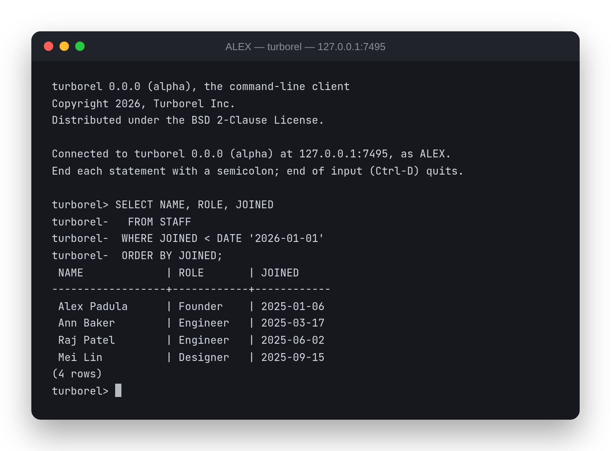

Turborel (TUR-boh-rel) is a relational database written in Rust. It isn’t a fork of another database. It’s designed from first principles as one extensible system for modern applications.
Open source under the BSD 2-Clause License.

Tables, graphs, vectors, JSON, XML, geospatial and full-text search, in one database.
Turborel (TUR-boh-rel) is a relational database written in Rust. It isn’t a fork of another database. It’s designed from first principles as one extensible system for modern applications.
Open source under the BSD 2-Clause License.

{{ f.text | safe }}
{{ post.data.description }}
{%- endif %}No posts yet.
{%- endif %}No releases yet. turborel is in alpha, and everything is built from the {{ docs.latest.refName if docs.latest else "main" }} branch{% if docs.latest and docs.latest.sha %}, currently at commit {{ docs.latest.sha }} ({{ docs.latest.date | longDate }}){% endif %}. The documentation follows it as it changes.
Subscribe to the newsletter to hear when the first release is out.
{%- endif %}